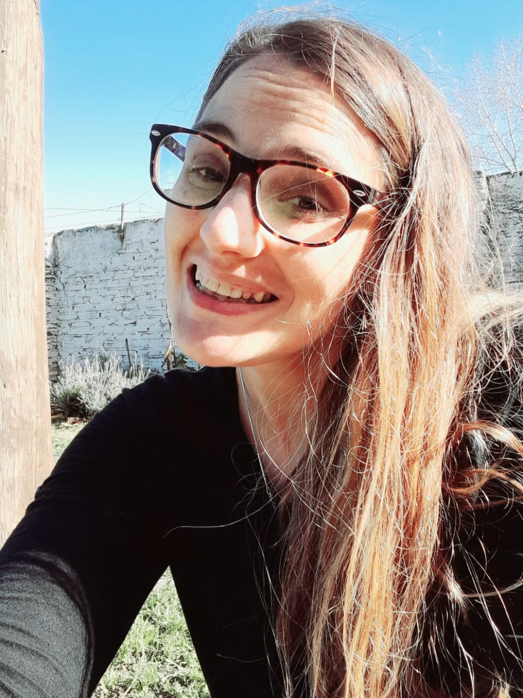

¿QUIÉN SOY?
Soy Brenda Rodriguez, una terapeuta holística que intenta brindar luz y sanación a todo aquel que este dispuesto a recibirlo.
A través de las diferentes terapias podrás conseguir la paz y limpiar tu alma. Podrás perdonar, sanar y liberar cargas de esta y otras vivas.
Te invito a caminar juntos en tu despertar espiritual y encontrar las respuestas que necesitas para tener una vida en abundancia.